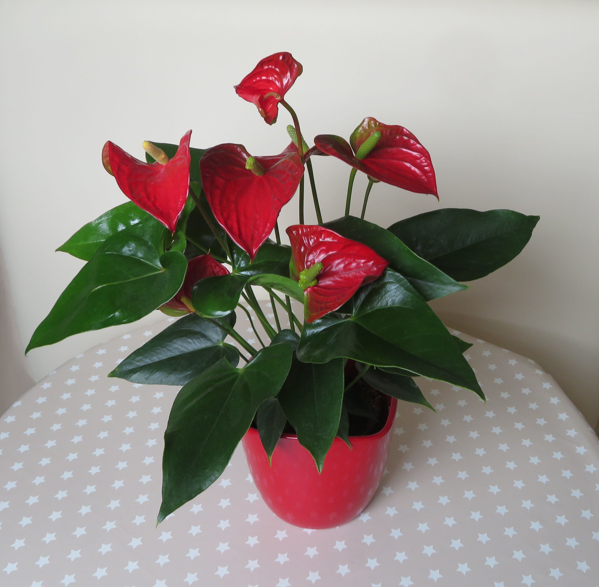
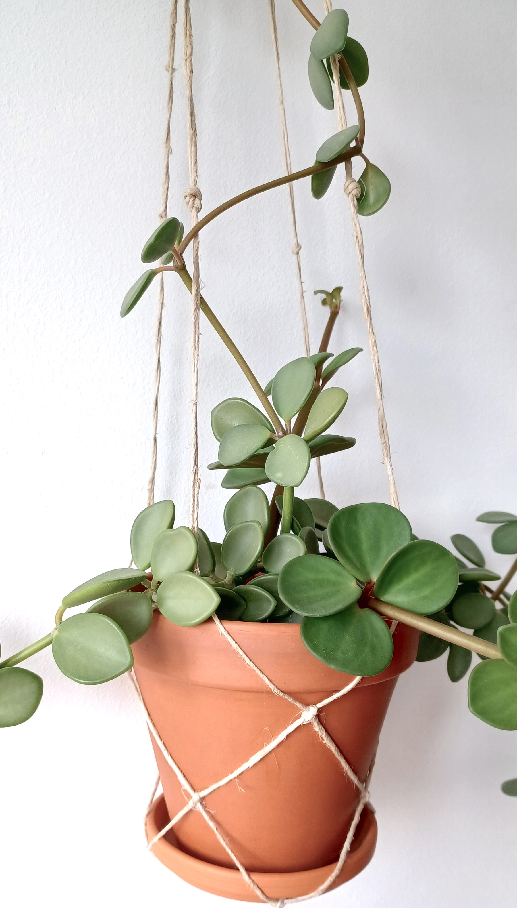
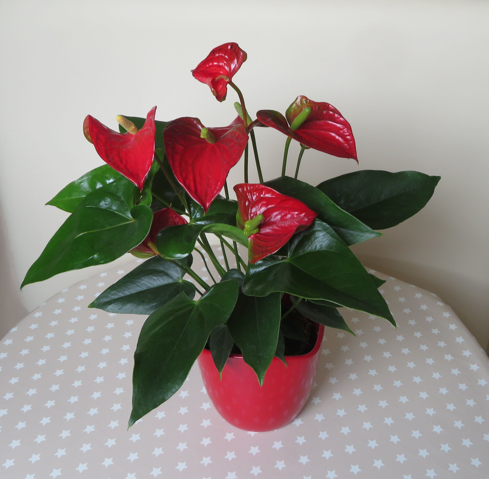
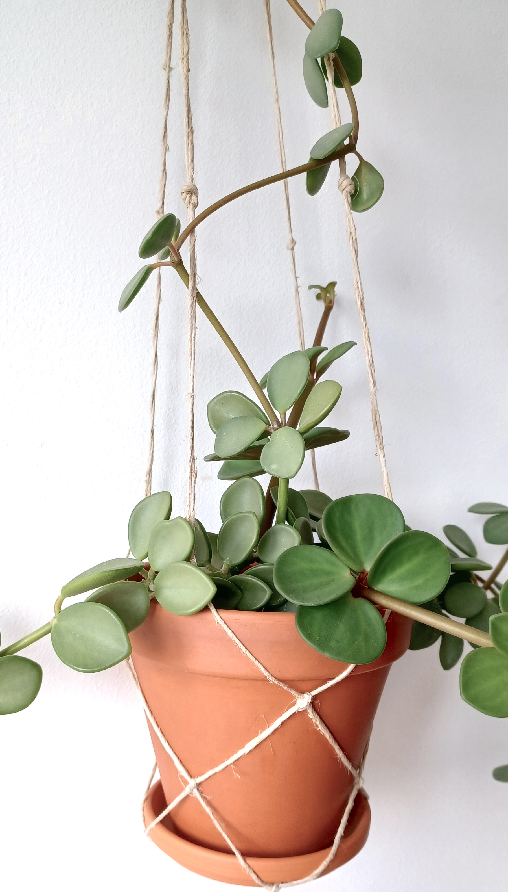

Gurka
Krispig och tacksam i kruka eller växthus, gillar jämn vattning och klätterstöd.
Vi odlar tillsammans, från frö till skörd. Här delar vi praktiska tips, sorter och erfarenheter för odling i kruka, balkong och trädgård.

 




Krispig och tacksam i kruka eller växthus, gillar jämn vattning och klätterstöd.
Ger mycket skörd på liten yta, toppa, tjuva och ge näring regelbundet.

Doftande köksfavorit som trivs varmt, plocka topparna ofta för buskigare plantor.

Storbladig klassiker som gillar ljust utan direkt sol, vattna när jorden torkar upp.
Trivs i halvskugga och gillar fuktig jord, belönar med vita blommor nästan året runt.
Succulent som vill torka upp mellan vattningarna, perfekt för dig som ofta glömmer.

Doftande och dekorativ, vill stå soligt och ha väldränerad jord för att må som bäst.

Sommarfavorit som blommar länge, nyp bort vissna blommor så fortsätter den leverera.
Riktigt lättskött och tålig, klarar både ljus och skugga, och gillar sparsam vattning.
Hänger fint i ampel och växer snabbt, klipp och sticklingsföröka för ännu mer grönska.

Elegant blomning med rätt rutin, doppa rötterna ibland och låt den sedan rinna av.
Minimal skötsel och maximal karaktär, låt jorden torka ut ordentligt mellan gångerna.
Snabb skörd för sallad och matlagning, så om i omgångar för jämn tillgång.

Söt och somrig, trivs i sol och ger bäst bär med jämn fukt och lite näring.

Vedartad krydda som gillar sol och väldränerat, låt torka upp och klipp försiktigt.
Under åren har vi genomfört flera gemensamma odlingsprojekt, från små stadsodlingar till större växthusinsatser. Här dokumenterar vi vad som fungerat och vad vi lärt oss.